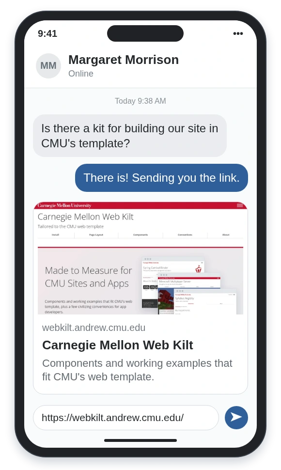

Put Your Best Page Forward
See how your Carnegie Mellon page looks when someone shares it, then make the preview image and tags it's missing.

Prepare Your Site
- Make the ImageA 1200 by 630 JPEG of the top of your home page,
under 300 KB. Take the screenshot yourself, or
let FencePost make it. Save it as
images/preview.jpgin your site's top folder. - Add the TagsPut the Open Graph tags below in each page's
<head>. In Cascade, choose the image as the site's Social Media Image instead; the template writes the tags. - Check the LinkPublish, then check a page's address. Fix anything FencePost flags before you share it.
What Is Open Graph?
Open Graph is a set of <meta> tags, first defined by Facebook in
2010, that describe a page to the apps that build link previews: Slack, Teams,
LinkedIn, iMessage and most chat and social apps. Without them, an app guesses, and
often shows only the page's title or a stray image from the page.
<meta property="og:site_name" content="Equipment Checkout">
<meta property="og:title" content="Reserve a Camera Kit - Equipment Checkout">
<meta property="og:description" content="Cameras, laptops and lights, free for CMU courses.">
<meta property="og:url" content="https://www.cmu.edu/equipment/reserve.html">
<meta property="og:type" content="website">
<meta property="og:image" content="https://www.cmu.edu/equipment/images/preview.jpg">
<meta property="og:image:width" content="1200">
<meta property="og:image:height" content="630">
<meta property="og:image:alt" content="Equipment Checkout's home page: Reserve a Camera Kit, beside a photo of a camera kit.">
<meta name="twitter:card" content="summary_large_image">-
og:titleandog:descriptionare the bold title and the line under it. -
og:imageis the picture, 1200 by 630, andog:image:altdescribes it for screen readers. -
og:urlis the page's full address, so shares of the same page count as one. -
og:site_nameis the site's name, which some apps show with the title. -
twitter:cardset tosummary_large_imageasks for the large picture instead of a thumbnail.
The Web Kilt's Link Previews / Open Graph page has the full standard, including how to add the tags in a CMS or an app.
Set Up With an AI Agent
Copy the prompt into an AI coding agent in your editor or terminal, and it sets up your site's link previews with FencePost.
Want to read it first? See the PromptHide the Prompt
Set up link previews for this site with FencePost. Read https://fencepost.andrew.cmu.edu/reference.html and the Web Kilt's standard at https://webkilt.andrew.cmu.edu/0/previews.html first. If you can connect MCP servers, add https://fencepost.andrew.cmu.edu/mcp and use its get_guide, check_link and generate_preview tools; otherwise use its API. FencePost works on public pages on cmu.edu or an approved Carnegie Mellon domain. Once the home page is published, make the site's preview image from it with generate_preview and save it as images/preview.jpg in the site's top folder. Add the Open Graph tags to the layout every page uses, filled in from each page's title, description and address, with the image's full address. Then run check_link on a few published pages and fix what it reports. Keep anyone's name or data out of the tags and the image.